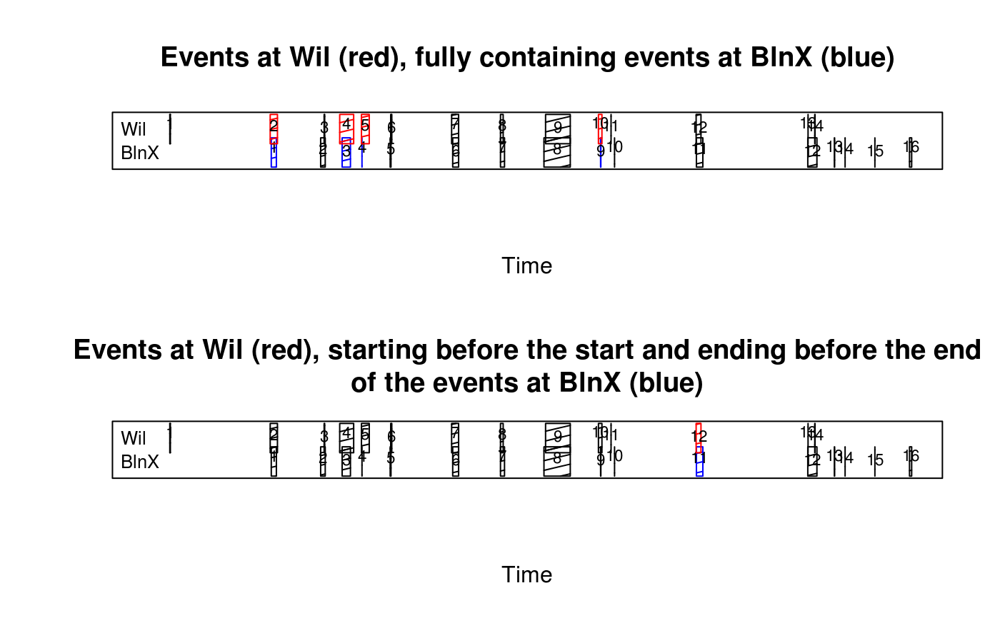

relations between begin and end of events
getEventRelations(events, referenceName, partnerName, parallelEventInfo = NULL, dbg = TRUE)
| events | list of event lists (in a data frame), as e.g. returned by
|
|---|---|
| referenceName | name of column in parallelEventInfo containing the numbers of the events to which the events in column partnerName are to be compared. |
| partnerName | name of column in parallelEventInfo containing the numbers of the events which are compared to the events in column partnerName. |
| parallelEventInfo | data frame as returned by
|
| dbg | if |
# Load example data set containing a list of rain events at different gauges data(rainEvents) cat(sprintf( "Event lists available for: %s\n", paste(names(rainEvents), collapse = ", ") ))#> Event lists available for: BlnX, BlnIX, BlnXI, Wil, Wila, Kar, ZhlI, StgI, Mal, Wit, ReiI# How are rain events in BlnX related to rain events in Wil? eventRelations <- getEventRelations( events = rainEvents, referenceName = "BlnX", partnerName = "Wil" )#> referenceEventNumber: 1 -> 1 partner events found. #> referenceEventNumber: 2 -> 1 partner events found. #> referenceEventNumber: 3 -> 1 partner events found. #> referenceEventNumber: 4 -> 1 partner events found. #> referenceEventNumber: 5 -> 1 partner events found. #> referenceEventNumber: 6 -> 1 partner events found. #> referenceEventNumber: 7 -> 1 partner events found. #> referenceEventNumber: 8 -> 1 partner events found. #> referenceEventNumber: 9 -> 1 partner events found. #> referenceEventNumber: 10#>#> referenceEventNumber: 11 -> 1 partner events found. #> referenceEventNumber: 12 -> 2 partner events found. #> referenceEventNumber: 13#>#> referenceEventNumber: 14#>#> referenceEventNumber: 15#>#> referenceEventNumber: 16#># Let's have a look at the output eventRelations#> event1 event2 beginRelation endRelation #> 1 1 2 beginsBefore endsAfter #> 2 2 3 beginsAfter endsBefore #> 3 3 4 beginsBefore endsAfter #> 4 4 5 beginsBefore endsAfter #> 5 5 6 beginsAfter endsAfter #> 6 6 7 beginsBefore endsAt #> 7 7 8 beginsAt endsBefore #> 8 8 9 beginsAfter endsAt #> 9 9 10 beginsBefore endsAfter #> 10 11 12 beginsBefore endsBefore #> 11 12 13 beginsAfter endsBefore #> 12 12 14 beginsAfter endsBefore# Example 1: partner events that are fully containing the reference events isContaining <- eventRelations$beginRelation == "beginsBefore" & eventRelations$endRelation == "endsAfter" # The following table relates numbers of "partner" events (event2) to numbers # of "reference" events (event1) for each case in which a reference event is # fully contained in a partner event. containing <- eventRelations[isContaining, ] # Let's check this graphically: # Define plot matrix of two rows and one column old.par <- graphics::par(mfrow = c(2, 1)) ganttPlotEvents( events = rainEvents$BlnX[], indicate = containing$event1, ylim = c(1, 2.8), title = "BlnX", indicationColour = "blue" ) ganttPlotEvents( rainEvents$Wil, indicate = containing$event2, add = TRUE, y1 = 1.8, title = "Wil" ) graphics::title("Events at Wil (red), fully containing events at BlnX (blue)") # Example 2: partner events that are starting before the reference event starts # and ending before the reference event ends isOverlappingLeft <- eventRelations$beginRelation == "beginsBefore" & eventRelations$endRelation == "endsBefore" overlappingLeft <- eventRelations[isOverlappingLeft, ] # Again, check this graphically: ganttPlotEvents( events = rainEvents$BlnX[], indicate = overlappingLeft$event1, ylim = c(1, 2.8), title = "BlnX", indicationColour = "blue" )ganttPlotEvents( rainEvents$Wil, indicate = overlappingLeft$event2, add = TRUE, y1 = 1.8, title = "Wil" )graphics::title(paste( "Events at Wil (red), starting before the start and ending before", "the end\nof the events at BlnX (blue)" ))